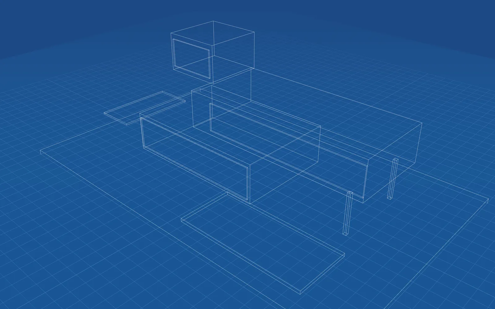
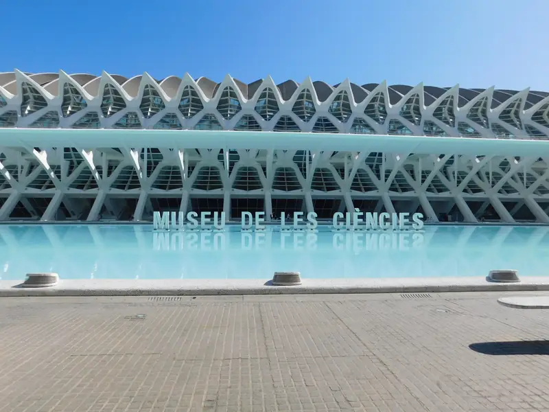
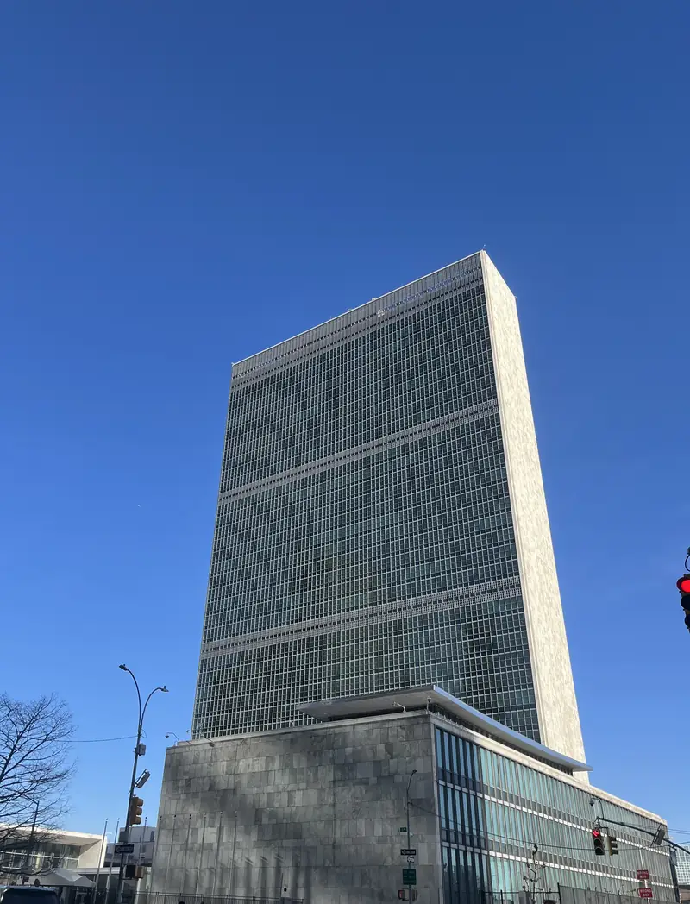
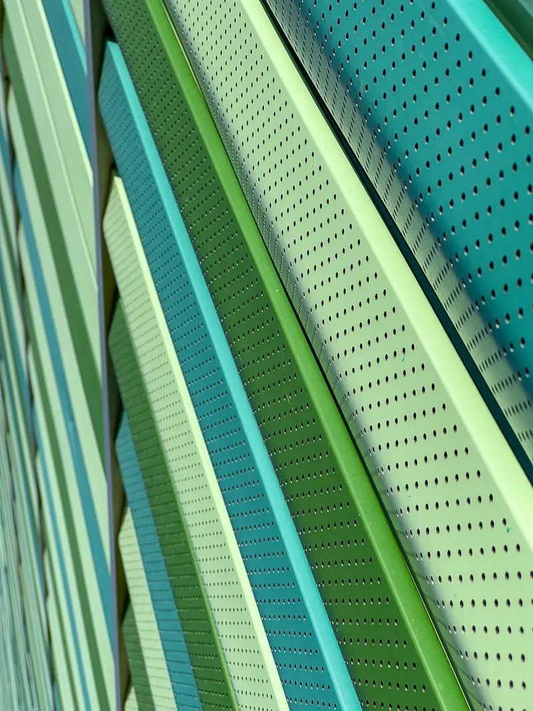
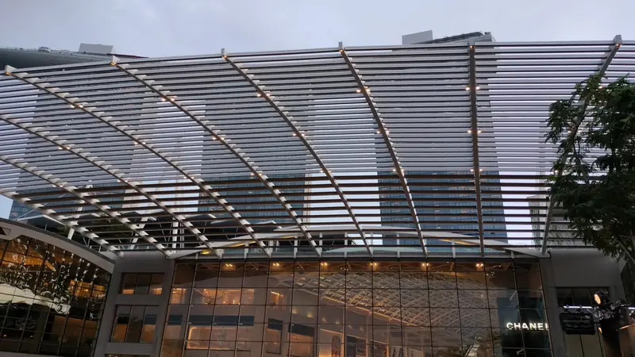

A
Arquitectura residencial
Anteproyecto, proyecto ejecutivo y dirección de obra para casas unifamiliares.
desde $ 45/m²*

Estudio Vértice · Arquitectura residencial · Medellín
Haz scroll: esta casa se levanta desde el plano, recibe la luz de la tarde y se enciende de noche. Así presentamos cada proyecto a nuestros clientes.
Agenda una visita al estudio01 — Plano
Planos, cortes y alzados con medidas reales antes de mover una sola piedra.
02 — Volumen
Hormigón visto, celosía de madera de teca y una piscina que refleja la planta alta.
03 — Luz
La tarde entra hasta la cocina; el sol del mediodía se queda en la celosía.
Proyectos seleccionados
Proyectos y fechas de ejemplo. Fotos CC0 de arquitectura real (créditos en el README), no son obra del estudio.




Servicios
A
Anteproyecto, proyecto ejecutivo y dirección de obra para casas unifamiliares.
desde $ 45/m²*
B
Materiales, mobiliario a medida e iluminación pensados con la arquitectura.
desde $ 25/m²*
C
Curaduría, licencia de construcción y coordinación con ingenierías.
tarifa fija*
D
Recorridos interactivos como el de esta página para vender sobre plano.
desde $ 900*
Proceso
Visita al lote, programa de necesidades y presupuesto real.
2 semanasDos propuestas con maqueta 3D navegable.
4–6 semanasPlanos ejecutivos, licencias e ingenierías coordinadas.
8–10 semanasDirección de obra con informe semanal en fotos.
según proyectoClientes (testimonios de ejemplo)
“Vimos la casa de noche, con las luces encendidas, un año antes de que existiera. Eso nos convenció.”
Familia Restrepo · Casa en El Retiro
“El presupuesto final se desvió un 3 %. Nuestro anterior arquitecto, un 40 %.”
Juliana P. · Casa Llanogrande
Contacto
Respondemos en menos de 24 h hábiles. La primera visita al estudio es sin coste (ejemplo).
Cra. 37 #8A-20, El Poblado · Medellín
Lun–Vie 9:00–18:00